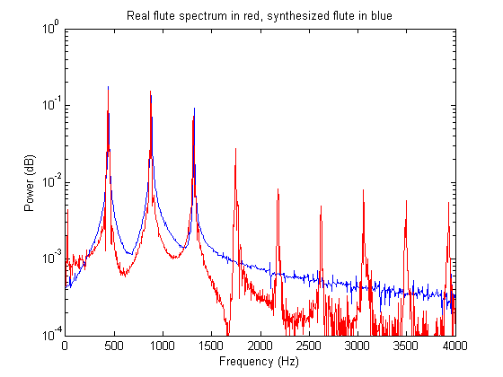
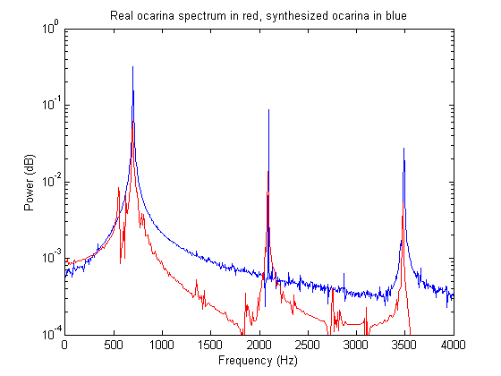
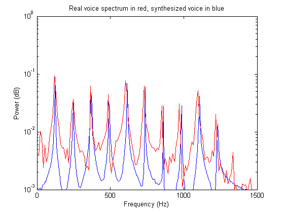
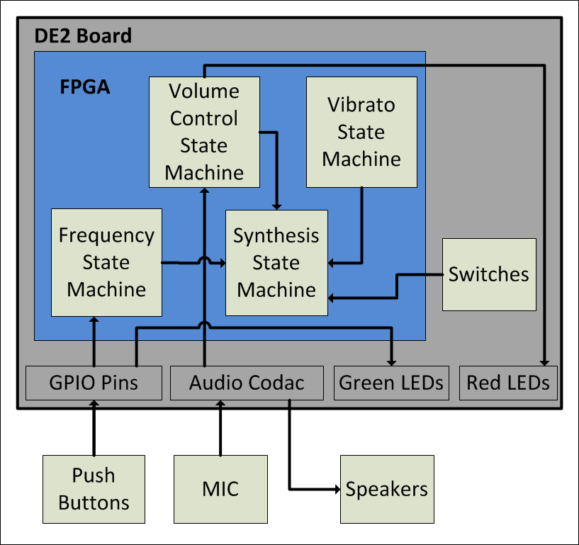
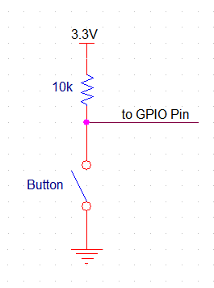
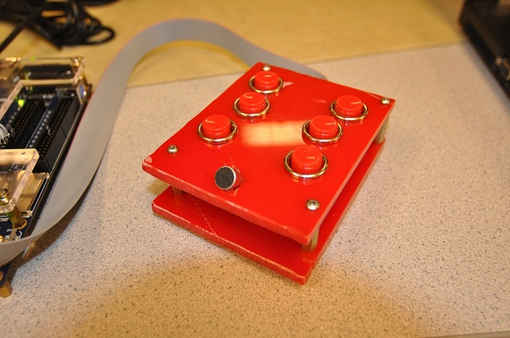
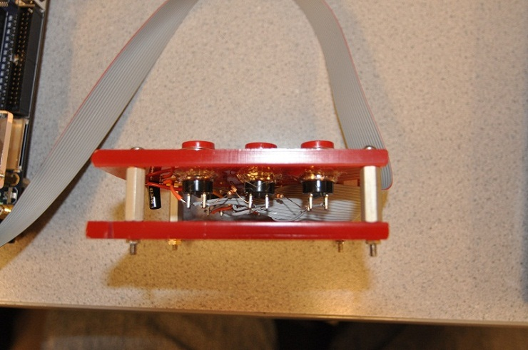
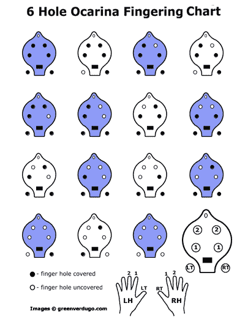

Project Summary
This project used an FPGA to emulate ocarina sounds using an additive, direct digital synthesis algorithm. In order to produce an accurate ocarina sound, the spectrum of a real ocarina was analyzed to see the relative amplitudes of each harmonic. Using this information, we could then create state machines to output sinusoids at each harmonic. The sinusoids were then scaled appropriately and summed together to produce the ocarina sound.
A physical ocarina equipped with six push buttons and an active microphone was built for this lab. The push buttons were used to configure which note (pitch) should be played. The microphone measured the intensity of air blown across it to control the volume of the sound.
This project was very interesting to us because it involved several stages of audio processing to achieve a good sound. It was a good application of digital signal processing and embedded system design.
Rationale and sources of your project idea
We decided that we wanted to work on a project that involved sound synthesis of some sort or another. We decided upon additive synthesis because it seemed interesting and relatively powerful. The reason an ocarina was chosen for the primary sound synthesis instrument mostly stemmed from the video game, The Legend of Zelda: Ocarina of Time, and the prominence an ocarina plays in the game. We thought it would be cool to duplicate this instrument in an electronic form.
Background math and principles of additive synthesis
A discrete Fourier transform (DFT) in Matlab was used to analyze the spectrum of an ocarina (as well as a flute, and voiced “AH” recorded by one of the group members). We employed the concept of spectral matching to perform the synthesis. This involved determining the frequency and relative power levels of each harmonic in the sample sounds. These harmonics were duplicated digitally using state machines capable of producing sinusoids at varying frequencies. Once the harmonics were generated, we used additive synthesis (the process of adding multiple sine waves together) to create a musical instrument sound. Since all sounds can be duplicated by this process (the principles behind a Fourier transform) this is a very effective process of creating sound.
Below is the plot of the power spectrum of the real flute with the additively synthesized flute overlaid. Note that the real flute has many more harmonics that were not duplicated in the synthesized version (all the way up to 12kHz or so). We opted to only duplicate three of these harmonics since the sound actually sounded better without all of the harmonics. The general rule of thumb in sound synthesis is if it sounds right, then it’s right.

Below is the power spectral graph of the original and synthesized ocarina sounds. Note that the ocarina skips every other harmonic.

The graph shown below is the power spectral graph of the sung voiced vowel “AH” and its synthesized counterpart. For this sound, a lot more harmonics were used to get a much more accurate sound.

Logical Structure

Hardware/software trade-offs
Originally, it was thought that a Nios II was going to be used to keep track of the notes being played and integrate with the user. However, after getting additive synthesis to work with the Nios, we realized that the CPU was doing very little work, and we decided to put all of the logic in hardware.
At one point, it was thought that a Pancake Stack CPU would be used to implement a digital low pass filter for the microphone filtering. However, it was determined that the CPU was overkill and some simple hardware could be used instead.
The main system is comprised of several finite state machines that interact with one another on the FPGA. The microphone has a simple driver circuit with an input through the line in on the FPGA. Finally, the push buttons are wired up to the GPIO ports on the board.
Standards & Copyrights
3.5mm audio jacks are used to input the microphone to the FPGA as well output the ocarina sound to the speakers. We believe that our project is not eligible for a copyright because there is an iPhone app that is very similar to our project.
Module Outline
The table below describes each Verilog module.
| Module Name | Description |
|---|---|
| DE2_TOP | The top level module for our project. Included in this module are instantiations of the modules listed below. |
| Reset_Delay | Needed to run the phase lock loop. |
| VGA_Audio_PLL | Used for generating the clocks used to run all of the modules, specifically AUD_CTRL_CLK. |
| I2C_AV_Config | Needed to use the Audio Codec. |
| AUDIO_DAC_ADC | Module to run the inputs and outputs to the Audio Codec. |
| sync_rom | Look-up table for the synthesized sinusoids. The module takes accumulators (which are increased at varying frequencies) as inputs and it outputs the corresponding sine values. |
In Depth Program Description
The following steps are performed by the top level module to create the synthesized sound:
1. Determine the desired pitch from the push buttons:
This is done by reading in the six push buttons from the physical ocarina. The button combinations are then mapped to a pitch using the fingering chart that can be found in the appendix.
2. Load the increment register with appropriate value:
When the desired pitch is determined, the DDS_incr register is set to the corresponding increment value. This is the value that will be periodically added to the fundamental frequency accumulator to create a pure sine wave as this frequency.
3. Increment the accumulators:
At this stage, the accumulators for each harmonic are incremented. For the fundamental, the increment is added once. For the first harmonic, the increment is added twice (shifted up by one and added). For the second harmonic, the increment is added three times (shifted up by one and added, and added again). This goes on for all of the harmonics. Additionally, the vibrato accumulator is also incremented here. Its increment value does not depend on DDS_incr; instead it is a constant which corresponds to 5 Hz.
Since we do not want the vibrato to occur throughout the entire note, we have a state machine wait for three tenths of a second before the vibrato effect is added in. After three tenths of a second, the vibrato envelop is slowly ramped up to full intensity. It remains at full intensity for the remainder of the held note. This ramping is done using the registers count_ramp and ramp. Count_ramp is used to keep track of how much time has passed so ramp is incremented at the correct time. Ramp is the amplitude of the vibrato effect which is incremented from 0 to 256 and then keeps its value until the next note starts. The ramping effect is illustrated in the image below.
4. Read in the microphone to determine the volume:
First, the audio_inR from the audio codac is read in and stored in the 16-bit mic_abs register. If the input is negative, its value is negated (so that it becomes a positive number). Now mic_abs has the absolute value of the audio_inR. Several latches are used to determine the volume level of the input. Each bit corresponds to a different volume level. Bits 6 down to 0 are always high (even when one is not blowing into the mic) so these bits are ignored. Bits 15 down to 7, however, get ORed with themselves every sample and stored in a corresponding latch. After every 1200 samples, the latches are conditioned upon to determine what the volume should be for the next 1200 samples. For example, if bit 15 was ever on in the previous 1200 samples, the volume will be a maximum in the next for the next 1200 samples. If none of bits 15 down to 7 are every set to the value one, then the volume will be set to zero. Since our sample rate is 48 kHz, 1200 samples correspond to 25 milliseconds, so this delay is not perceivable.
5. Superimpose the harmonics to produce instrument sounds:
The top level module is capable of producing three different types of instrument sounds: ocarina, flute, and voiced “AH”. These sounds are toggled using the switched on the DE2 board. A state machine is used to determine which instrument should be synthesized. Then the pure harmonics are scaled using shifts and added together to produce the sounds. These sounds are stored in the register synth_signal. This register is then fixed-point multiplied (using a 1:9 fixed-point format) by the vibrato ramp envelope to produce a signal with vibrato. Next the signal is multiplied by the volume register to produce a scaled signal with vibrato. This signal is then output to the audio codec.
Hardware - Building/Assembling the Ocarina:
The ocarina was assembled from two thick rectangular pieces of plastic that are separated by ¾ inch spacers. In the top piece of plastic, six large buttons were placed, three for each hand. Additionally, toward the front of the top piece, a microphone was placed. Between the two pieces of plastic, the buttons are connected to a ribbon cable that goes to of the GPIO connection ports.
One side of each button is connected to the GND of the DE2 development board, and the other side is connected to a 10k ohm pull up resistor and one of the GPIO pins for reading the value of the switch. The pull up resistor is necessary so that when the switch is closed, it doesn’t short the board’s 3.3V to GND. A schematic of the button configuration is included below:

The microphone is also connected to GND and 3.3V (through a 1k ohm resistor) and the output of the microphone is measured after a 10 uF capacitor. The capacitor acts as a high pass filter to cut out the 3.3V DC voltage bias. A schematic of the microphone configuration is included below:
Below are images of the final ocarina:


Borrowed Code
In the early stages of the project, Matlab was used extensively to try out various ideas before putting them onto the FPGA. Before designing our own code, we found a very useful website that provides code that plots the waveform and power spectrum of a sample audio file and will create synthetic sounds using additive synthesis. That site is listed here: Musical Analysis and Synthesis in Matlab
Things we tried which did not work
We initially tried implementing a running window averager in Verilog to low pass filter the microphone input. This was done so that it could be multiplied by the output signal in order to dynamically control the output sound’s volume. In the end, the windowing function did not work very well since our window size was not large enough. Instead of dealing with making the window bigger, we decided to simply implement the volume control in a different manner (see above for details).
Safety considerations
We only worked with 3.3V signals during the course of this project and as a result, there weren't many safety concerns. Building the ocarina required the use of a band saw (outsourced to Bruce Land). When the drill and Dremel tools were used, proper protective eyewear was worn. Other than the occasional noise from testing our sounds, our project did not interfere with other groups’ projects.
Overall Conclusions
The ocarina sounds quite good, especially with the vibrato that slowly ramps up for longer notes. There is a tiny bit of a static noise in the sound output, which is a result of the microphone volume determination code that picks up some static once in a while. However, there is no noticeable hesitation in the sound output, as the sound is generated in under 30ms, which is unperceivable to the user.
The buttons on the physical ocarina are have a great size and feel, however they are not as responsive as they could be; they sometimes don’t register if they are not pressed quite right. This is likely a result of the buttons being overused and abused before they were added to our project.
The microphone works well, and the volume control feature is very intuitive. It does require the player to blow directly into it, which takes getting used to.
Below is a video of a scale being played on the ocarina:
Reflection Upon Original Expectations
At the beginning of the project, we expected a digital ocarina with a physical interface that sounds decent and is easy to play. The project that we built met these expectations. It would have been nice to have more responsive push buttons on the ocarina as well as more instruments besides an ocarina, flute, and voiced “AH”. Also a smarter microphone volume controller that doesn't introduce static would have been nice.
Intellectual Property Considerations
There are very few intellectual property considerations since the code we wrote and hardware we designed was fully from scratch. Note that Bruce Land supplied much of the template code (as well as lab facilities and help of every sort). Additionally, Mark R. Petersen’s gave us some ideas and an initial starting point with the Matlab scripts he wrote. That site is listed here: Musical Analysis and Synthesis in Matlab
Fingering Chart

Program Listings
DE2_TOP.v (Main Verilog Hardware Design File)
AUDIO_DAC_ADC.v (Supporting File - Audio input/output)
I2C_Controller.v (Supporting File - I2C Controller)
VGA_Audio_PLL.v (Supporting File - Creates PLL's for Audio)
Work Breakdown
| TASK | COMPLETED BY |
|---|---|
| Conceptualization | Both |
| Verilog design and coding | Both |
| Physical ocarina construction | Joe |
| Wiring of ocarina | Evan |
| Report writing | Both |
| Website construction | Evan |